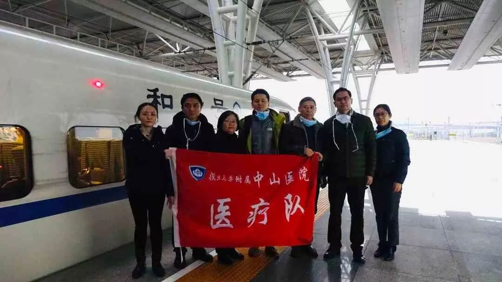
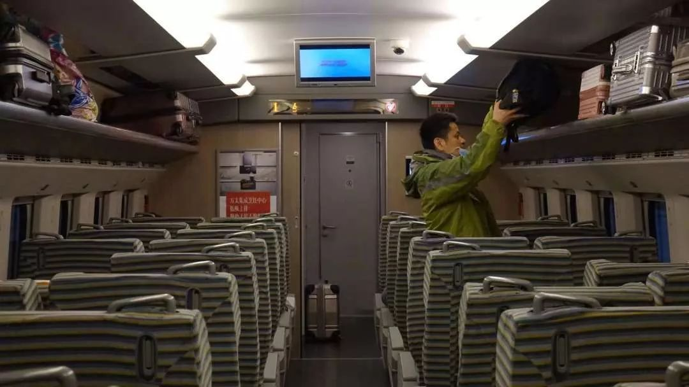
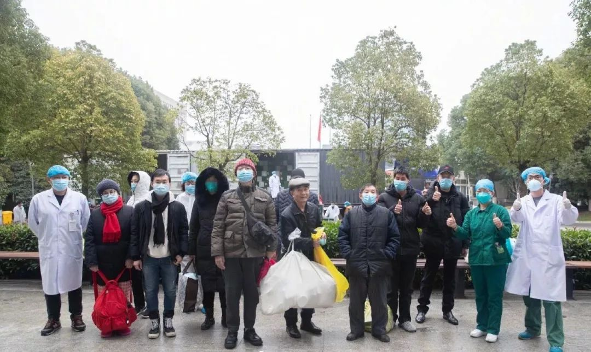

武汉ICU主任万字口述：患者1小时住满一病区，因恐慌到医院排队没必要
原文链接 备份链接 来源 | 潇湘晨报（xxcbwx） “我们这收治了个病患吧，一个人可能感染了好几个人。其中就包括照顾他的医护人员，不是我们医院，是其他医院的。” 口述 | 武汉市肺科医院ICU主任 胡明 采访 | …


钟鸣医生的同事们为他送行
全文共*2833*字，阅读大约需要7分钟。
新冠肺炎病人有的早期发病并不是非常凶险，但是后期突然会一个加速，病人很快进入一种多器官功能衰竭的状态，会是一种炎症的风暴
轻症病人不可掉以轻心
本文转载自南方人物周刊
文 | 南方人物周刊记者 杨楠
南方人物周刊实习记者 何沛芸 聂阳欣
图 | 复旦大学附属中山医院提供
编辑 | 蒯乐昊 周建平
小年夜那天，上海中山医院重症医学科副主任钟鸣接到国家卫健委指令前往武汉参与抢救新冠肺炎的危重病人。他是第一个驰援武汉的上海医学专家，从接到任务到出发，只有一个小时。
当晚他与广州、杭州的另两位专家乘高铁先抵达麻城，再由湖北省卫健委开车将他们接到武汉。途径高速收费站，三位专家又换了一辆能够进入市区的车，方才抵达酒店。1月24日，钟鸣进驻武汉金银潭医院开展工作。金银潭是武汉第一批定点收治医院，也是武汉新冠肺炎危重症患者的主要选择之一。
以下是南方人物周刊昨晚对钟鸣医生的独家专访。

小年夜那天，钟鸣乘高铁驰援武汉
南方人物周刊：抵达金银潭后，您主要的工作内容是什么呢？
钟鸣：当时金银潭已经有三位医疗救治专家组成员，然后又选派了我们三个人过来，具体完成临床一线的带组工作。
金银潭的重症医学科（ICU）在他们的南七楼，只有十六张床，但是病人远远超过这个负荷。当时医院打算开楼下两层，将普通病房改成临时ICU。所以到我们去的前两天，临时ICU才刚刚把设备搬进去了。我被安排在六楼，是危重病人最多的主战场，我带领湖北省各个地方前来武汉援助的医生、护士组成一个临时的治疗救治团队，收治当时病区里一半的危重病人，大概16个。我的团队里有三个ICU的医生，是从湖北各个地方支援来的，还有三个金银潭本院的非ICU医生辅助，还有一些护士。

空荡荡的高铁列车上，钟鸣医生说：“家里人其实很担心，但他们已经习惯了”
南方人物周刊：救治初期，您所面对的困难有什么？
钟鸣：太多了。首先这个病和过去我们SARS或者禽流感都不太一样，SARS很多时候是病人一上来病情就非常的重。但新冠病人有的早期发病并不是非常凶险，但是后期突然会一个加速，病人很快进入一种多器官功能衰竭的状态，会是一种炎症的风暴。一旦进入这种状态，我们的治疗很难把它拉回来。这和过去完全不一样，很多病人不是死于肺。因为我们有ECMO（危重病体外心肺支持），我们有呼吸机，我们有各种治疗的策略，我们可以让病人肺的功能得到代替。但是很多病人死于肺外的多器官功能的衰竭，这个跟过去都有很大的不同。
南方人物周刊：为什么病情会有这种突然的加速？
钟鸣：从表面上看，病人的体内可能启动了一种炎症的风暴，这种炎症的风暴导致了各个器官功能的衰竭。我们观察到的是，很多病人都有心肌损伤的标志物的升高，所以这个病毒很有可能它本身也会损伤心肌，类似于心肌炎的表现，可能会损伤很多其他器官。
我们收治到的病人，有些人本身就夹杂其他疾病，得了肺炎之后，原有疾病就恶化了。比如我们有个急性心梗过的病人，体内放过支架，他肺炎一来了之后，可能存在着严重的心肌缺血。转到我们这里的，都是在普通病房或者别的医院恶化了，一来都是非常非常的危重。
南方人物周刊：非常危重意味着什么？
钟鸣：随时都会去世。
南方人物周刊：危重病人多数是高龄患者么？
钟鸣：多数是高龄，或者有很多合并疾病的人。我们病房里也有年轻人，二十几岁的也有。但目前这些年轻人都还在治疗中，去世的病人中暂时还没有非常年轻的。
南方人物周刊：体外支持系统最强力的就是ECMO，对于金银潭来说，有多少患者能用到ECMO？
钟鸣：金银潭目前ECMO的设备还是比较多的，但就像我刚刚讲的，不是所有危重病人用ECMO就能挽救生命，很多病人死于肺之外的多器官衰竭，这不是ECMO能够替代。如果病人处于这种状态，ECMO也不能挽救他们的生命。
南方人物周刊：您到武汉一线奋战十天了，现在病人的情况怎么样？
钟鸣：经过这十天的流程优化和团队磨合，病区的死亡数量有了明显的减少。
比如有一个83岁的老太太进来，当时非常凶险，我们给她吸氧不行，就用呼吸机进行无创的通气。经过我们去调整她的内环境，去调整呼吸参数，避免了老太太气管插管，最后能过渡到用普通的鼻导管，轻度的吸氧就能够很好，甚至她的核酸都已经转阴了，这两天就要转回到普通病房去。对我们来说，病人转去普通病房，没有再转回来，就意味着他最终出院了。

2月2日下午，武汉金银潭医院有37名确诊新型冠状病毒肺炎患者出院，是迄今为止该院出院人数最多的一天
南方人物周刊：临时组建的团队，临时改造的病房，这会对工作造成一些困难么？
钟鸣：初期会有一些困难。相比较正规的ICU病房，临时改造的ICU病房非常局促。原来放一两个床的空间放了四个床，旁边还放着监护仪、呼吸机、血透机和ECMO。我们的操作非常多，床的一周都要站着医生护士，每个人都顶着墙顶着角，很多事情操作起来都比平时困难。
我们刚开始没有ICU的专业护士，工作极其受制。ICU 的护士专业性要求非常高，她们必须非常熟悉那些重症设备，比如了解监护仪上的生命体征代表什么，了解呼吸机，要能够上血液净化设备，就是我们的双泵血透机等等。而且她要对病人病情变化具备高度的职业敏感，和医生有很好的配合。ICU的专业护士短时间是很难替代的，是很紧缺的人才。
现在全国的ICU护士逐渐都调配来支援了，ICU护士和非ICU护士互相配合，一帮一带，磨合得非常好，整个工作流程在规范起来。
我们在这种特殊情况下，做了大量的磨合工作，有些困难你没有经历过，是很难想象到的。我们制定了很多的规章制度，来让我们的工作尽量能够适应这种特定疫情下的需求。比如规定了大家可以交替的事情，不让检查做在同一个时段；还有统一一些病人的管理，减少护士走动的量等等。现在大家的信心也恢复了，工作效率也更高了，我们的设备和流程都得到了一步步的完善。团队已经磨合得高效而团结，工作效率比以前高了非常多。
南方人物周刊：你们现在的工作状态是什么样的？
钟鸣：医生的白班是从早上7点50交班到晚上5点，护士有夜班有白班，但平均每个都要待六七个小时，所以每个护士出来都像虚脱一样，因为穿了很多的衣服。我们有时候搬病人，要把八九十公斤的人，让他完全翻过来。他身上有很多的管子，就需要把病人腾空翻起再放下来。我们戴着面屏，透气都很困难，还要做这种剧烈的体力劳动，都觉得要窒息了。另外做很多事情都非常困难，不是平时状态能够想象的。
ICU的防护最严格，医护人员戴着面屏，水汽经常糊在眼睛那里，很多时候都看不清。又比如我们上ECMO，我们平时只戴一层手套，但现在要戴三层甚至四层手套，手肿了一样在操作，就会很多困难。
在ICU里面待着，对体力和精力要求是非常高的，金银潭的工作远超出我们平时工作的强度。
南方人物周刊：您现在有摸索到一些救治危重新冠肺炎病人的规律么？
钟鸣：这段时间我也在总结我们收治病人的数据，但是我并没有一个很好的证据、一个科学的东西能够回答你。现在回答是不负责任的。我们正在寻找规律，但是现在恐怕不能告诉你有什么明确的发现。
南方人物周刊：最后一个问题，我们采访到一些轻症或者自愈的病人，大家往往对退烧感到很乐观，这能视为好转的迹象么？
钟鸣：并不能掉以轻心。我对轻症病人没有经验，但我们这里的重症病人也有一度好转然后迅速恶化的。我接触轻症病人的经验不足以给建议，但如果在家隔离，任何症状上的反复或者出现呼吸急促，都应该及时到医院去。


中国人物类媒体的领导者
提供有格调、有智力的人物读本
记录我们的命运 · 为历史留存一份底稿
戳击下面图片 继续阅读专题

**
宅到发慌
**
不如静心回望
▼
属于我们的2019
▼

原文链接 备份链接 来源 | 潇湘晨报（xxcbwx） “我们这收治了个病患吧，一个人可能感染了好几个人。其中就包括照顾他的医护人员，不是我们医院，是其他医院的。” 口述 | 武汉市肺科医院ICU主任 胡明 采访 | …
原文链接 备份链接 口述 |武汉市肺科医院ICU主任 胡明 采访 |潇湘晨报记者 耿志方 温艳丽 廖如云 记录 |实习生 赵鸿婕 朱文静 杨丽英 谭思慧 林颖娴 对于胡明来说，他根本没空看疫情的新闻，哪怕是春晚，除夕和初一都没来得及在同事 …
原文链接 备份链接 走进武汉金银潭医院，第一感觉是安静。与在武汉闹市区其他综合类的三甲医院不同，这家传染病专科医院，楼与楼之间隔得很远，种了好多树，即使在冬季也是郁郁葱葱。收治了几百位新型冠状病毒肺炎患者的住院楼，门窗紧闭，站在楼下几乎听 …
原文链接 备份链接 陈德昌说，金银潭医院的重症病人情况比较严重。在他工作的病房里，29个病人有16个都上了呼吸机，同时面临物资短缺的难题。当他们作为上海医疗队进驻时，原有医护人员已连续工作近一个月了。这次出征，比想象中要艰苦。 57岁的陈 …
原文链接 备份链接 Original 李萍萍 真实故事计划 真实故事计划 About Feature 每天一个打动人心的原创真实故事。 Today 在武汉某定点医院工作的李萍萍，讲述了抗击新型肺炎的医务人员在物资紧缺、人手不足的情况下，度 …